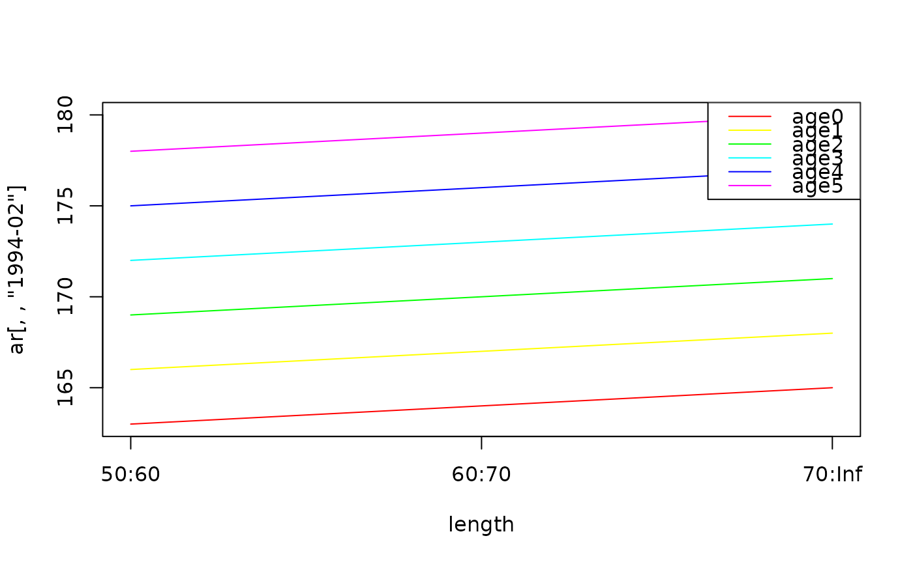
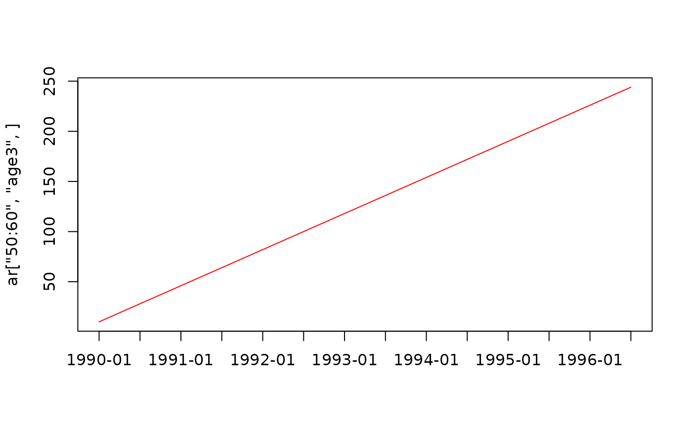

array_utils.RdTools to make munging array reports easier
g3_array_agg(
ar,
margins = NULL,
agg = c(
"sum",
"length_mean", "length_sd",
"predator_length_mean", "predator_length_sd" ),
opt_time_split = !("time" %in% margins || "time" %in% ...names()),
opt_length_midlen = FALSE,
... )
g3_array_combine(
arrays,
agg = sum,
init_val = 0 )
g3_array_plot(
ar,
legend = "topright" )Input array, e.g. dstart_fish__num from a model report
List of input arrays, can be a nested list as generated by cons in g3_quota_assess
dimension names to include in the final array, e.g. c("age", "year") to generate a report by-year & age. If NULL, no aggregation is done
Function or character. Function to use when aggregating, or name of one of the built-in functions
The initial value to use when combining arrays
Boolean, should we split up "time" into separate "year" & "step" dimensions?
Boolean, should we convert "length"
Location of legend, passed to legend's x parameter
Filters to apply to any dimension, including "year" / "step" if opt_time_split is TRUE. e.g. length = 40, age = 5, step = 1
g3_array_agg allows you to both filter & aggregate an array at the same time.
Specifying a filter in ... is simplfied in comparison to a regular R subset:
You can give the dimensions in any order
Values are always interpreted, age = 3 will be interpreted as "age3", not the third age.
For particular dimensions we have extra helpers:
Numeric ages e.g. age = 5 are converted to "age5", as generated by gadget3
Numeric lengths will pick a value within groups, e.g. with lengths "10:20", "20:30", length = 15 will pick the smaller lengthgroup
g3_array_combine generates the union of 2 disjoint arrays,
so you can combine aggregated output from an immature and mature stock for example.
g3_array_plot will plot the contents of an array, for arrays with 2 dimensions or less.
An array, filtered by ... and aggregated by margins
# Generate an array to test with
dn <- list(
length = c("50:60", "60:70", "70:Inf"),
age = paste0("age", 0:5),
time = paste0(rep(1990:1996, each = 2), c("-01", "-02")) )
ar <- array(
seq_len(prod(sapply(dn, length))),
dim = sapply(dn, length),
dimnames = dn)
ar[,,"1994-02", drop = FALSE]
#> , , time = 1994-02
#>
#> age
#> length age0 age1 age2 age3 age4 age5
#> 50:60 163 166 169 172 175 178
#> 60:70 164 167 170 173 176 179
#> 70:Inf 165 168 171 174 177 180
#>
g3_array_plot(ar[,,"1994-02"])

g3_array_plot(ar["50:60","age3",])

# Generate by-year report for ages 2..4
g3_array_agg(ar, c('age', 'year'), age = 2:4)
#> year
#> age 1990 1991 1992 1993 1994 1995 1996
#> age2 102 318 534 750 966 1182 1398
#> age3 120 336 552 768 984 1200 1416
#> age4 138 354 570 786 1002 1218 1434
# ...for only step 1
g3_array_agg(ar, c('age', 'year'), age = 2:4, step = 1)
#> year
#> age 1990 1991 1992 1993 1994 1995 1996
#> age2 24 132 240 348 456 564 672
#> age3 33 141 249 357 465 573 681
#> age4 42 150 258 366 474 582 690
# Report on smallest length group, for each timestep
g3_array_agg(ar, c('length', 'time'), length = 55)
#> time
#> length 1990-01 1990-02 1991-01 1991-02 1992-01 1992-02 1993-01 1993-02 1994-01
#> 50:60 51 159 267 375 483 591 699 807 915
#> time
#> length 1994-02 1995-01 1995-02 1996-01 1996-02
#> 50:60 1023 1131 1239 1347 1455
# Use midlen as the dimension name
g3_array_agg(ar, c('length', 'time'), length = 55, opt_length_midlen = TRUE)
#> time
#> length 1990-01 1990-02 1991-01 1991-02 1992-01 1992-02 1993-01 1993-02 1994-01
#> 55 51 159 267 375 483 591 699 807 915
#> time
#> length 1994-02 1995-01 1995-02 1996-01 1996-02
#> 55 1023 1131 1239 1347 1455
# Combine 2 arrays with disjoint age ranges into one list
g3_array_combine(list(
g3_array_agg(ar, c('age', 'year'), age = 2:4),
g3_array_agg(ar / 1000, c('age', 'year'), age = 3:5) ))
#> year
#> age 1990 1991 1992 1993 1994 1995 1996
#> age2 102.000 318.000 534.000 750.000 966.000 1182.000 1398.000
#> age3 120.120 336.336 552.552 768.768 984.984 1201.200 1417.416
#> age4 138.138 354.354 570.570 786.786 1003.002 1219.218 1435.434
#> age5 0.156 0.372 0.588 0.804 1.020 1.236 1.452